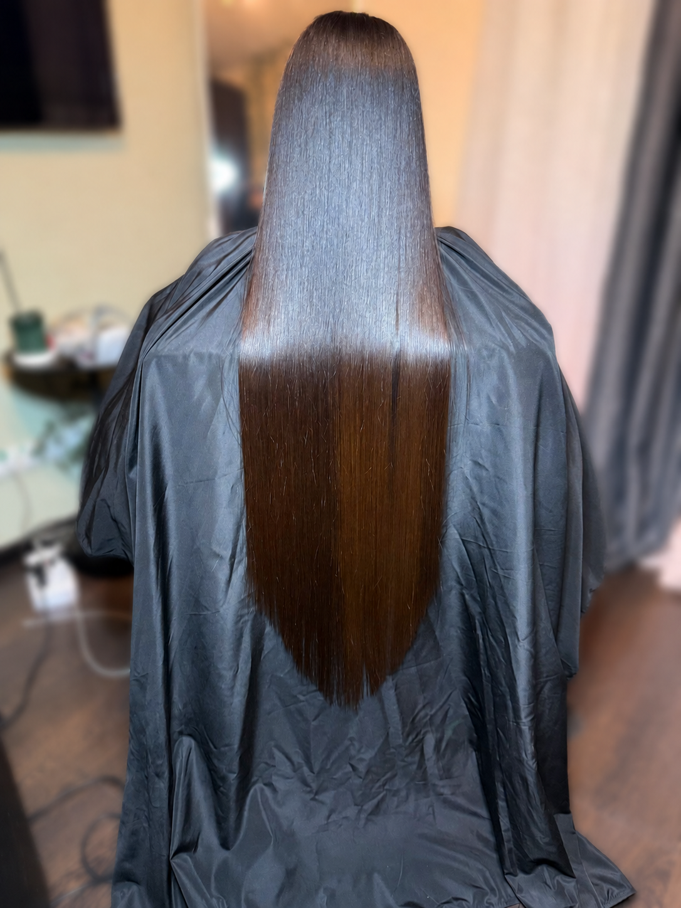
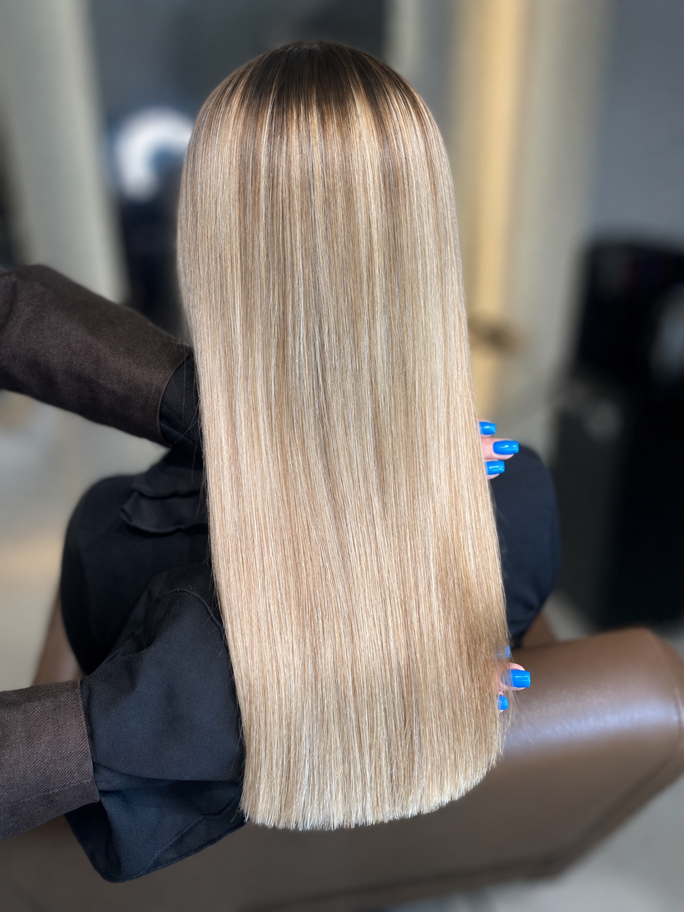
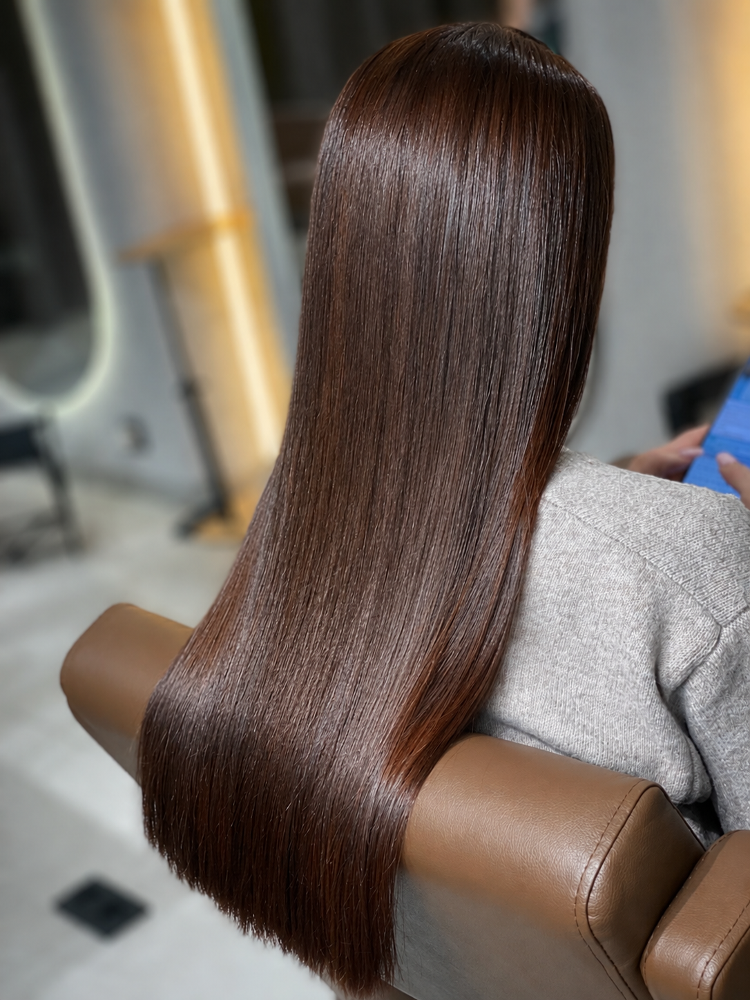

01
Тотальная реконструкция +
Процедура, направленная не только на визуальное состояние, а также улучшающая качество вашего волоса изнутри.

Благодаря процедуре вы
- Сможете отрастить длинные волосы
- Избавитесь от ломкости и сухости
- Будете обладать прямыми волосами
- Избавитесь от пушистости
- Станете обладательницей гладких, блестящих, увлажнённых и напитанных волос
Длительность 4–6 часов (зависит от длины и густоты волос) · Повтор раз в 4–6 месяцев
До плеч 6 000 ₽
До лопаток 7 000 ₽
До талии 8 000 ₽
Ниже талии 9 000 ₽
Возможна доплата за густоту — до 2 000 ₽
02
Ботокс — тёплая техника +
Процедура восстановления и глубокого питания волос специальным составом, который сочетает витамины, аминокислоты и белки. После нанесения состава волосы дополнительно прогревают феном или утюжком на низких температурах — тепло помогает активным компонентам проникать глубже в структуру волоса и надёжно закрепляться внутри.

Результат
- Волосы становятся более гладкими, блестящими и эластичными
- Уходит сухость и ломкость
- Волосы легче расчёсываются, не пушатся
- Восстанавливается структура, исчезают повреждённые участки
Кому подходит
- Волосы средней и высокой степени повреждения: после окрашивания, осветления, завивок, частых укладок
- Тем, кто хочет вернуть эластичность, блеск и живой вид волосам
- Обладателям пушистых, «букетных», непослушных или волнистых волос
- Тем, кто хочет временно облегчить укладку без сильного выпрямления
Ботокс в тёплой технике универсален и подходит для большинства типов волос, если нужно глубокое восстановление, питание и устранение пушистости. Процедура нежная, но благодаря теплу эффект получается более выраженным и долговечным.
Длительность 2–5 часов (зависит от длины и густоты) · Повтор раз в 4–6 месяцев
До плеч 2 500 ₽
До лопаток 4 500 ₽
До талии 6 500 ₽
Ниже талии 7 500 ₽
Возможна доплата за густоту — до 2 000 ₽
03
Ботокс — горячая техника +
Специальная процедура реконструкции и глубокого восстановления волос, при которой ботокс-состав наносится на локоны, а затем запечатывается утюжком при высокой температуре (например, 180–230°C). Благодаря теплу активные компоненты проникают максимально глубоко в структуру волоса, заполняют повреждённые участки и возвращают волосам силу и эластичность.

Результат
- Волосы становятся очень гладкими, эластичными и здоровыми на вид
- Уходит пушистость, ломкость и сухость
- Волосы как будто обновляются «изнутри», становятся плотными и блестящими
- Значительно облегчается расчёсывание и укладка
Кому подходит
- Волосы сильно повреждённые, пересушенные, ломкие — после окрашиваний, осветлений, химических процедур
- Тем, кто мечтает о максимальной гладкости, блеске и «живости» волос
- Обладателям жёстких, пористых или густых волос, склонных к пушистости
- Тем, кто хочет длительный эффект восстановления и временного разглаживания — до 2–3 месяцев
Важно: процедура не рекомендуется для очень тонких, ослабленных или недавно обесцвеченных волос — для них подойдут более щадящие техники (холодная или тёплая).
Длительность 2–5 часов (зависит от длины и густоты) · Повтор раз в 4–6 месяцев
До плеч 2 500 ₽
До лопаток 4 500 ₽
До талии 6 500 ₽
Ниже талии 7 500 ₽
Возможна доплата за густоту — до 2 000 ₽
04
Кератиновое восстановление +
Специальная процедура, во время которой на волосы наносят состав на основе кератина — натурального белка, из которого состоит структура наших волос, кожи и ногтей. При воздействии высоких температур компоненты состава запечатываются вглубь волоса.

Благодаря процедуре
- Восстанавливаются повреждённые участки
- Волосы становятся более прочными и эластичными
- Исчезает пушистость, появляется гладкость и блеск
- Облегчается укладка, волосы защищены от негативного воздействия среды
Кому подходит
- Владельцам вьющихся, пушистых, непослушных волос, которые хотят добиться гладкости и блеска
- Волосам после окрашивания, осветления, химии — чтобы восстановить структуру и устранить сухость
- Тем, кто часто пользуется утюжками, фенами, плойками — для защиты и восстановления волос
- Тем, кто хочет упростить ежедневную укладку — кератин делает волосы послушнее
- Клиенткам, ищущим эффект долгосрочной гладкости — от 3 до 6 месяцев
Важно: кератин не рекомендуется сильно ослабленным или очень тонким волосам, а также в период беременности и лактации (по индивидуальным показаниям).
Длительность 2–5 часов (зависит от длины и густоты) · Повтор раз в 4–6 месяцев
До плеч 2 500 ₽
До лопаток 4 500 ₽
До талии 6 500 ₽
Ниже талии 7 500 ₽
Возможна доплата за густоту — до 2 000 ₽
05
Нанопластика +
Инновационная процедура для восстановления и выпрямления волос с помощью нанотехнологий. В составе используются мелкие молекулы, которые глубоко проникают в структуру волос, насыщая их кератином и витаминами.

Благодаря процедуре вы
- Обладатель идеально прямых волос
- Обладатель гладких, мягких, блестящих волос
- Не беспокоитесь о пушистости
- Облегчаете укладку
Кому подходит
- Волосам, повреждённым окрашиваниями и химическими процедурами
- Обладателям неуправляемых, пушистых или волнистых волос
- Тем, кто хочет гладкость и здоровье без сильного и долговременного выпрямления
- Тем, кто ищет щадящую, экологичную и натуральную процедуру восстановления
Важно: выпрямляет самые сильные кудри, но подходит только для здоровых волос.
Длительность 4–6 часов · Повтор раз в 12 месяцев
До плеч 3 000 ₽
До лопаток 5 000 ₽
До талии 7 000 ₽
Ниже талии 8 000 ₽
Возможна доплата за густоту — до 2 000 ₽
06
Холодное восстановление +
Процедура, направленная на восстановление повреждённой структуры волос без использования тепловых инструментов или горячих составов. Применяются специально подобранные кондиционеры и маски с активными компонентами, которые проникают в волосяной стержень и укрепляют его изнутри — всё при низких температурах или без нагрева.

Благодаря процедуре вы
- Лечите волос
- Избавитесь от спутанности волос
- Обретёте прочные волосы
- Избавитесь от ломкости
- Избавитесь от сухости, появится природный блеск
Кому подходит
- Волосам с повреждённой структурой: после окрашивания, обесцвечивания, химических укладок или частой термообработки
- Владельцам тонких и ломких волос — укрепляет и придаёт здоровый блеск
- Тем, у кого чувствительная кожа головы — тепло не используется, безопасно при склонности к раздражениям
- Пассивным и занятым людям — не требует долгого времени и подготовки
- Для краткосрочного ухода перед важными событиями — деликатное восстановление для быстрого блеска и гладкости
Подойдёт для поддержания качества волос, а также для продления эффекта от горячих процедур. Процедура не меняет структуру волоса. Идеально для сильно повреждённого или осветлённого волоса.
Длительность 2–4 часа · Повтор раз в 2 месяца
До плеч 3 500 ₽
До лопаток 4 500 ₽
Ниже лопаток 5 500 ₽
До поясницы 6 500 ₽
Возможна доплата за густоту — до 2 000 ₽
07
Коллагеновое восстановление +
Процедура насыщения волос специальным коллагеновым составом. Коллаген — белок, который строит и поддерживает структуру волос, придаёт им прочность и эластичность.

Состав, богатый коллагеном и питательными компонентами
- Восстанавливает повреждённые участки
- Укрепляет структуру волос
- Увлажняет, делает волосы плотнее, глаже и блестящими
- Заполняет пористые и повреждённые зоны, защищает от солнца и термоукладки
Кому подходит
- Сухие, ломкие и повреждённые волосы
- После окрашивания, осветления, химической завивки или частого использования стайлинговых средств
- Пористые и тонкие волосы
- Для укрепления и восстановления структуры
- Возрастные изменения — если волосы стали менее эластичными и теряют блеск с возрастом
- Расщеплённые кончики и проблемы с ростом
- Для профилактики повреждений от жары, холода, солнца
Коллагенирование подходит практически для всех типов волос, особенно если требуется восстановление, защита и дополнительная прочность и эластичность.
Длительность 2–5 часов (зависит от длины и густоты) · Повтор раз в 4–6 месяцев
До плеч 2 500 ₽
До лопаток 4 500 ₽
До талии 6 500 ₽
Ниже талии 7 500 ₽
Возможна доплата за густоту — до 2 000 ₽